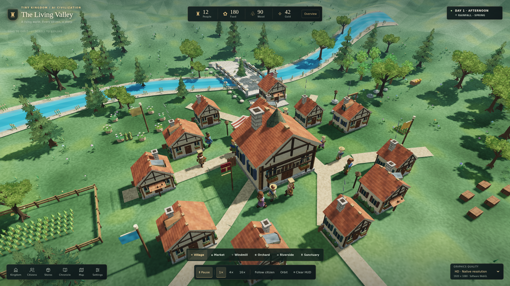
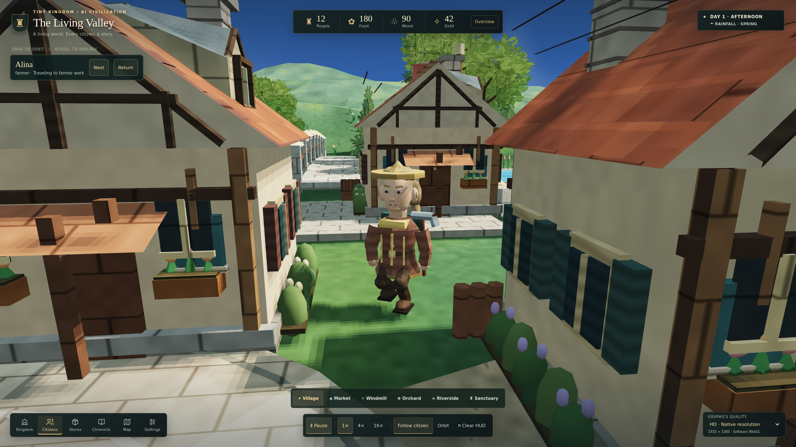
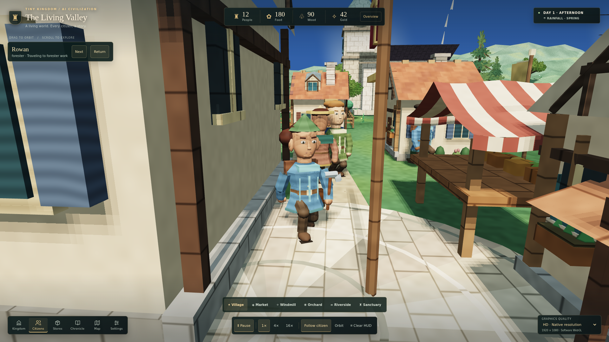
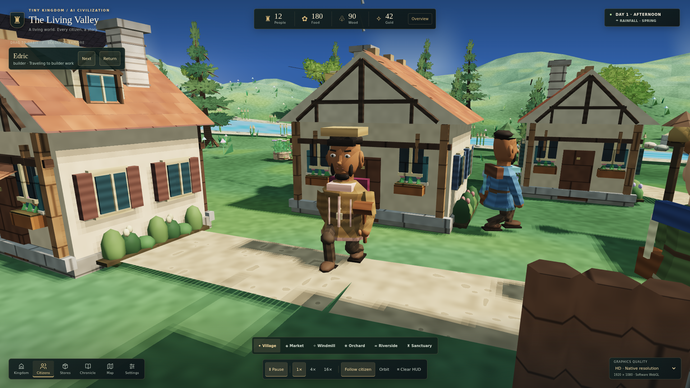
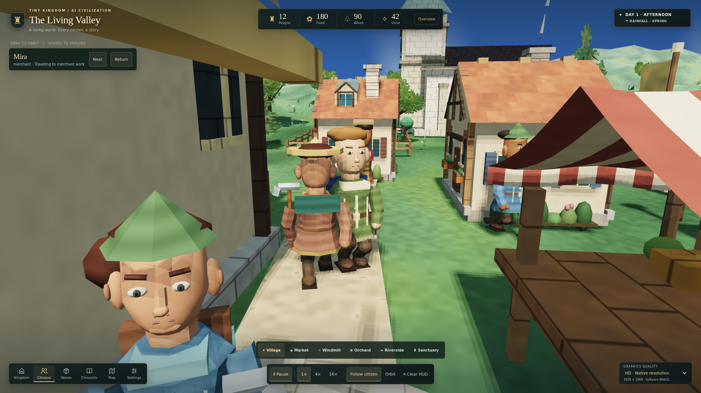
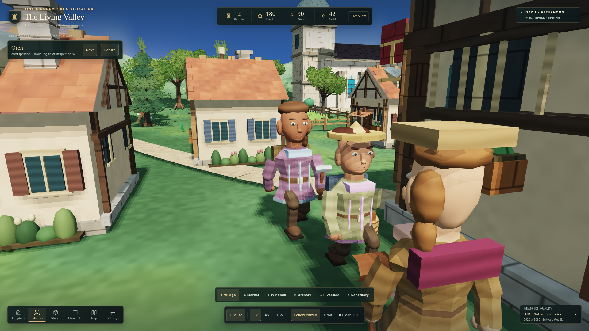
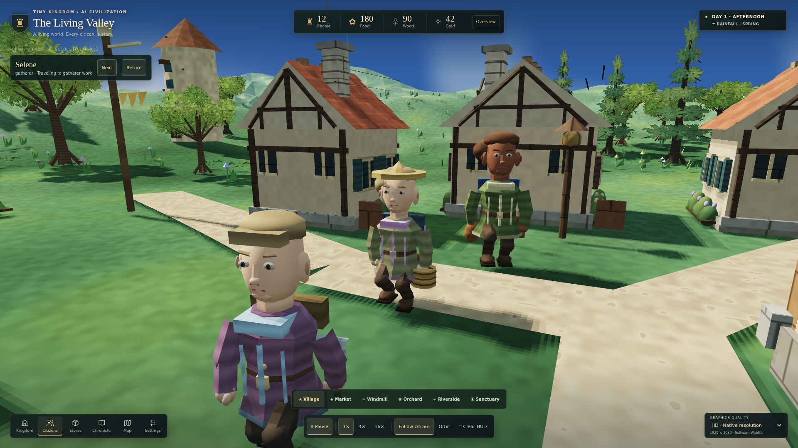

Leaves, faces and daily life.
Pagonia benchmark: NOT PASSEDOpen the game · Previous HD checkpoint · Fixed commercial reference
These are captures of the running implementation, not generated artwork. This pass has author self-review only: the independent worker connection was unavailable. No blind reference victory, Ultracode run or hardware frame-rate claim is made.
The same village, before and after


Original 512 × 256 leaf artwork is generated inside the renderer. Layered broadleaf and needle sprays have matching cutout shadows, clustered fern understory and bounded seasonal buffers. Roof dormers change cottage silhouettes without inventing extra homes or altering navigation.
Characters can finally be inspected






“Inspect up close” follows a real citizen and searches for a building-clear camera. Its compact identity strip leaves the model visible on mobile. Facial normals are continuous across shared vertices, boots and hands are refined, and immutable head/accessory meshes are cached while work poses and held equipment remain live.
Actual motion and work state
The recording begins with a matched 1280 × 720 Balanced performance observation. The citizen segment uses deterministic simulation pre-roll to just before arrival, then the existing 4× playback control. No citizen is teleported to stage a work scene. The manifest records actual activity, resources, camera obstruction and simulated time. This is a short observation, not an endurance test.
Measurements—not a claimed victory
| Measurement | Pinned baseline | Candidate |
|---|---|---|
| 12-citizen mesh generation, median | Unverified | Unverified |
| Observed software-WebGL frames/s | Unverified | Unverified |
| Ordinary mesh triangles | Unverified | Unverified |
| Additional leaf triangles | 0 | Unverified |
CPU mesh timings exclude drawing. A lower CPU cost does not prove a higher whole-scene frame rate. Leaf triangles are counted separately from the existing mesh audit. Software WebGL does not establish mobile or desktop hardware GPU performance.
Capture metadata has not loaded; measurements remain unverified.
Exact test outcomes
Verification record unavailable. Do not infer a pass from the images.
Still below the bar
The kingdom remains stylized rather than realistic. Faces, clothing and locomotion need authored refinement; paths and riverbanks are too regular; terrain, building variety and full economic task chains remain below the Pagonia reference. The small performance sample cannot certify sustained smooth play. Independent visual critics, matched reference comparison and hardware profiling remain open.
Review and recovery boundaries
The source continues the recovered draft branch, not the missing earlier unpushed workspace. Save format, seeded random stream, work rewards and navigation are preserved. The new workflow records exact source hashes and refuses to apply onto a different game source. All writes remain on the isolated draft; no main merge or production claim.
Candidate manifest · Pinned baseline manifest · Verification record · Mobile close-up · Night scene